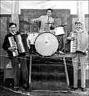

This web site is funded by the Caerwent Community Council ©2000-2018 All rights reserved
Designed by breezegraphic.com Legal Notices
 1990: Caerwent - The field that became Canon Lane.
1990: Caerwent - The field that became Canon Lane.
We lost the best mushrooming field for miles around when they built the Canon Lane estate! On the other hand, we gained valuable housing, and more importantly, a much needed and revitalising boost to Caerwent's population.
Thanks to Karl Bryant for the photograph. When he took it he had no idea that Canon Lane was going to be built - or that he'd one day be living there!
 1994: : Caerwent - The village from the air.
1994: : Caerwent - The village from the air.
The Roman walls are very obvious in this view, as is the church - and quite a bit of the area owned by the Ministry of Defence to the north of the village is visible as well.
This area was originally acquired by the then 'War Office' in 1938 and was the site of the Royal Naval Propellant Factory. The factory closed in 1965, and two years later the site was taken over by the US Army as a storage depot (under overall control of the RAF), which is how it remained until they in turn closed their operation 1n 1993. In 1997 the site was designated as a Ministry of Defence Combat Training Area.
The recent years have seen some relaxation of the Official Secrets Acts rules that control access to the area, and parties of visitors are now allowed to visit what has become one of the most important nature reserves in the country.
 1994: : Caerwent - The village from the air.
1994: : Caerwent - The village from the air.
The same flight, looking a little further to the east. Something missing? That's right - Canon Lane!
(And Centurion Court and Cwrt Morgan aren't there either)
 1997: The Caerwent Playing Fields Committee.:
1997: The Caerwent Playing Fields Committee.:
The only known picture of a Playing Fields Committee in captivity!
In 1977 your committee members were:
Stuart Gardner, Stephen Richards, Ian Venables (Treasurer), Ray Hannan and Colin Counsell.
Linda Gardner, Dawn Dunlop, Martin McHugh (Chairman), Des Barnett (Vice-Chairman) and Hilary Counsell (Secretary).
 2001: Dinham Road, Caerwent.:
2001: Dinham Road, Caerwent.:
Dinham Road, Caerwent, as it looked since the Ministry of Defence built it over six decades ago. Click on the picture and see how it looks today!
1930: The Caerwent Carnival Queen and her court.
Taken in the garden of No. 1 Burton Villas, the group consisted of:
Back Row, left to right: A niece of Vicar's wife Mrs Coleman Williams, Mrs Coleman Williams herself, Walter Fuller and Lizzie Drower.
Second row, left to right, Betty Adams, Joyce Gardiner, Carnival Queen Marjorie Drower, Josie Vicarage, Miss Butler and Yvonne Adams.
Front Row, left to right, Betty Butler, Myrtle Miles and an unknown little girl who was brought along by Mrs Coleman Williams.
 1930: The Caerwent Carnival Queen and her court.
1930: The Caerwent Carnival Queen and her court.
Another picture of the 1930 Carnival Queen and her court has been discovered! Left to right, Betty Adams, Joyce Gardiner, 'Queen' Marjorie Drower, Yvonne Adams and Josie Vicarage.
 1932: No 1 of a series of 5. The Post Office, Caerwent
1932: No 1 of a series of 5. The Post Office, Caerwent
Frank Drower, village baker and postmaster, commissioned this series of postcards to clebrate the construction of his new Post Office general stores and bakery in 1932.The complete series is reproduced here by courtesy of Mrs Mabel Hudson, Caerwent's senior resident.
This view features Frank Drower himself, with his 12 year old daughter Marjorie, now Mrs Bill Morgan.
Although a few years have passed since this was taken, Marjorie and Bill still live at the Post Office, which is now run by her daughter-in-law, Muriel Morgan.
 1932: No.2: The Cross, Caerwent.
1932: No.2: The Cross, Caerwent.
The stones at the Cross again, but this time taken looking towards the church.
 1932: No 3: The Parish Church, Caerwent.
1932: No 3: The Parish Church, Caerwent.
 1932: No. 4: "The Corner", Caerwent
1932: No. 4: "The Corner", Caerwent
Frank Drower again! This time with the village bobby, Police Constable Ralph Moore. The house on the corner was the police station. Behind P.C. Moore can be seen a light coloured rectangle on the wall of the police station above a concrete plinth. This was the site of one of the earliest Automobile Association roadside telephone boxes which had been removed a year or so earlier. Presumably it was relocated, but where is unknown.
Eastgate Crescent was yet to be built, and no, we don't know whose dog that was! (Although you can bet that somebody will ...)
 1932: No. 5: The Burton Homes, Caerwent
1932: No. 5: The Burton Homes, Caerwent
 1933: The Caerwent Village Hill (in the rain!)
1933: The Caerwent Village Hill (in the rain!)
In 1932 Frank Drower moved his bakery to the top of the village and built a new shop and Post Office - the one that's there today. His daughter Marjorie (now aged 80) recalls that in the following year he bought a new Morris car, registration number WO 2418 - and here it is parked outside the bakery on what appears to be a very wet day!
Caerwent Postmaster Frank Drower sets off with his morning deliveries. The bicycle was a very heavy 'Rudge-Whitworth' model with 28" wheels.
 1933: Caerwent Carnival Procession
1933: Caerwent Carnival Procession
In this interesting photograph, quite a number of the village personalities of the 1930s have been caught by the camera.
Starting on the extreme left, the two ladies in the immediate foreground are Daisy and Ethel Morgan, from Llanvair Road. Just above them is Mr. E.G.Price of Great House Farm, Caerwent who also provided the horse and cart. In the procession following the cart, Peggy Jones has been identified, while actually on the cart is the carnival queen Joyce Gardiner, from Crick, with her attendants Josie Vicarage and Betty Evans. Looking on from the side of the road are Mrs. Vicarage, with Howard Price and village undertaker Bill Morgan. Finally, leading the horse is Mr. Tom Lewis.
1934: Tea on the lawn, Caerwent Post Office
"Teas with Hovis" said the sign outside Caerwent Post Office (see the postcard above) and here all is ready for the arrival of a special guest - the noted archaeologist, the late Sir Mortimer Wheeler.
From the left, standing, are Mrs Etherington (wife of the village policeman), Frank Drower and Lizzie Drower. Seated are Elizabeth Wood (from Slough Farm), Mrs Mann (Mrs Etherington's mother) and Marjorie Drower (who, as Mrs Marjorie Morgan is still to be found at the Post Office!)
1934: Caerwent village baker Frank Drower with family and friends
From the left, standing, Bert Fuller, Walter Fuller, Lizzie Drower, Frank Drower, Percy Evans and Ernie Morgan. Seated, Winnie Poole (left) and Beatty Baker.
c1935: Caerwent Football Team Players and Officials.
They've won something spectacular, but we're not sure what - can anybody help?
Dating the picture has been achieved by comparing people in the picture with other pictures taken at the time - notably Mr Vicarage, characteristically unsmiling as befits the village school headmaster, who is in the centre in the back row.
The photograph was taken outside the now-demolished Village Institute which was situated on the patch of land inside the walls just west of the Northgate Inn. All but three of them have been identified, see enlargement for full details.
Thanks to Mrs Mabel Hudson for the photograph.
c1935: The Coach and Horses Inn Darts Team, Caerwent.
As above, but this time it's the Darts Team - again, can anybody help?
Dating the picture has been achieved in the same way, and all but one of the members of the team have been identified. See the enlargement for full details.
Thanks to Mrs Mabel Hudson for the photograph.
 c1935: The Penhow Quarry workforce - a day out.
c1935: The Penhow Quarry workforce - a day out.
Now this is interesting - not only do we have a group photographed beside their coach on a day out - possible at the races somewhere - but two of them then go on to have a further photograph taken enjoying a pint - but this time by a probably itinerant photographer using the 19th century "Tintype" process. This process had died out commercially in the 1880s but lived on wherever the novelty of an 'instant' photograph would appeal. Full details with the enlargements.
Thanks to Mrs Mabel Hudson for these remarkable photographs.
c1939: Hands up all those who know what this is!
No takers? Well it's the railway bridge at Crick over the A48 road under construction in 1939.
Because of military secrecy in those days, the bridge and its railway line connecting the new Royal Naval Propellant Factory to the main rail network didn't appear on any maps and officially didn't exist!
Thanks to Major Hughes, Commanding Officer of the Caerwent Army Training Area which occupies the old RNPF site, for the photograph.
 1939: Caerwent Carnival.
1939: Caerwent Carnival.
In the months before the war, Caerwent had a "King and Queen of Peace", six year olds John Peach and Laureen Jones.
Unfortunately we don't have a picture of the court ladies.
Thanks to Mrs Peggy Peach for this lovely photograph.
"Unfortunately we don't have a picture of the court ladies" - Oh yes we do! Many thanks to Mrs Margaret Minns (Margaret Hicks in the photo) for rectifying the situation!
Left to right, Margaret Hicks, Norah Price, Joan Chappell and Isabel Hooper.
Thanks Margaret!
 1940: Caerwent Carnival.
1940: Caerwent Carnival.
A year later and the Carnival King's crown was worn by Alfie Williams. His Queen was Joan Williams (no relation).
Three of the five Court Ladies have been identified as Nancy Counsell, Nesta Creed and Lillian Griffith.
Thanks to Mrs Margaret Minns for this interesting photograph.
1945: The Coach and Horses Inn regulars enjoy an outing.
Caerwent veteran Les Lewis has so far identified Harry Jackson, Cyril Hooper, Harry Vickery, Walter Toogood, Reg Crook, Frank Herbert, Howard Price, Arthur Baker, Ted Broadhurst, Jessie Hillier, Bobby Cattell, Frank Locke, Roy Cochrane, Ernie Francis, Joey Jones, Bert Grant, 'Taffy' Evans, Arthur Hawker, and Jack Ashby.
Thanks to John Williams for the loan of the photograph.
 1945: Llanfair Discoed - the Greenhouses.
1945: Llanfair Discoed - the Greenhouses.
This view from the top of the Llanfair Discoed village hill shows clearly the extent of the greenhouses that once covered the fields below the Court House.
Thanks to one-time Llanfair Discoed resident Ray Lloyd for sending the print by email.
 1945: Caerwent.
1945: Caerwent.
The end of the war was celebrated in Caerwent by a carnival procession, which included the local Chepstow-based "Bertoni" dance band. The whole band set up on the back of a lorry and played throughout the day. The large 'BERTONI' display board was normally seen on the wall behind the band when they were playing in more conventional venues!
Here they are seen proceeding along Ash Tree Road, with the "Unit 1 Boiler House" coal loading gantry crane for the Royal Naval Propellant Factory clearly visible in the background.
Thanks to one-time Merton Green resident Tony Stock for sending the print by email.
 1946: The Coach and Horses Inn, Caerwent, darts team, 1946 winners of the Chepstow
and District Knockout Cup.
1946: The Coach and Horses Inn, Caerwent, darts team, 1946 winners of the Chepstow
and District Knockout Cup.
The proud team consists of, from the left, standing, Harry Jackson, 'Taffy' Evans, Les Lewis, Doug Baynham, Arthur Baker, Wallace Daw, 'Bunny' Davies, Percy Gardiner and Cyril Hooper.
Seated are Bill Lovesey on the left and Walter Toogood on the right, with a youthful John Squibbs between them.
1946: The Royal Naval Propellant Factory, Caerwent.
The staff of the Acids Laboratory.
Sincere thanks to Major Hughes, Commanding Officer of the Caerwent Army Training Area which occupies the old RNPF site, for the photograph, and Mr C. W. Alexander for putting names to the faces. Click on the picture to see who's who!
c1950:Music, Maestro, Please!
This was the 'Rhythaires' dance band - the sort of line-up that provided the music for countless village functions in those days before discos.
All village locals, the band consisted of Des Morgan (left), Norman Parry (drums) and Tom Henson (left).
c1952: Caerwent Carnival procession at 'The Cross'.
Thought to date from around 1952, Mrs Vicarage can be identified with some certainty, seated centre front on the float, presumably as an escort to the carnival queen and her court! The carnival queen is Jean Edwards, and the court ladies on the side of the float facing the camera are, from the left, Judy House, Susanne Keaton, Coral Marsh, Pat Malachy and Pat Melhuish.
In addition, standing beside the float where Pat Melhuish is sitting is Pat's sister Valerie.
Thanks to Coral Marsh (now Mrs Coral Pike) and Pat Malachy for putting names to the faces.
c1955: A post card of Caerwent Village.
Probably taken in the mid-fifties - the 'Hovis Bread' sign is not on the wall of Frank Drower's bakery, which suggests that he had retired and the old bakehouse was ready to become Box Tree Cottage once again.
The petrol pumps are still there outside Mr. Adams' shop (together with an advertisement for 'Castrol Oils') and a fire extinguisher which indicates that they are still in use.
In the shop window, with aid of a magnifying glass, it is possible to make out a board advertising 'Seed Potatoes', a 'Wall's Ice Cream' poster and an advertisement for 'Franklin's Mild Tobacco'.
Sincere thanks to Mrs Margaret Minns (née Hicks) for the photograph.
1957:Caerwent - Aerial View from the West
This is one of the Ministry of Public Buildings and Works post cards produced in 1957. St. Tathan's Place, on the extreme right, is still under construction.
 1957:The Caerwent Junior Football Team
1957:The Caerwent Junior Football Team
The 1957 Caerwent junior footballers were a force to be reckoned with!
Here they pose triumphantly, having won the Caldicot and District Junior Football League Shield and Cup.
 1959: Caerwent - The East Wall.
1959: Caerwent - The East Wall.
The dramatic effect of the excavation of the Green Lane section of the East Wall is visible in the background of these two views of the late Frank Drower's garden.
Regrettably, the excavations meant the destruction of many lovely mature trees, including a huge and very beautiful oak, many centuries old...
One hopes that forty years on we are a little more enlighted, and the landscape is given greater consideration before the chain-saw is deployed.
 1959: Ah - the days of Rock 'n' Roll!
1959: Ah - the days of Rock 'n' Roll!
... and that peculiarly late 1950s phenomenon, "skiffle". Caerwent's contribution was the Bakehouse Boys Skiffle Group, consisting of Bryan Morgan (left), Keith Francis (drums), and Glyn Thomas (right).
Yes it's a football team - but maybe not the Caerwent team. There were certainly Caerwent lads involved though, including Brian Harding, Paul Stapley, Keith Francis, Jeff Nutley, John Whistance and Bryn Fuller. Anybody know which team this is?
 1960: Caerwent - from the Church Tower
1960: Caerwent - from the Church Tower
Another interesting view of the village, this time looking north from the top of the church tower. In the foreground, the small notice board on the house on the left is the timetable of the buses that ran through the village.
Beyond is the school, with its wartime air raid shelter still there in the playground.
In the middle distance the crescent of black 'Nissen Huts' that were built around Merton Green is visible. They were built to provide accommodation for personnel brought in to staff the Royal Naval Propellant Factory, some buildings of which can be seen beyond. The families who occupied the immaculately maintained Nissen Huts with their neat gardens were completely absorbed into the village community, and many of their descendants still live in the village and the surrounding area today - in many cases in the third generation.
 1963: Another series of postcards of Caerwent.
1963: Another series of postcards of Caerwent.
That 'Corner' again! The signpost occupies the site of the now demolished house on the left, and Eastgate Crescent has been built, together with a pavement beside the road. The old concrete base of the AA box was still there - in fact it wasn't removed until the pavement was widened and relaid in February 2001.
And the person standing there? It's Frank Drower again, re-creating the postcard he appeared in over thirty years earlier!
(No dog though...)
 1963: Another series of postcards ofCaerwent.
1963: Another series of postcards ofCaerwent.
Beyond the Burton Homes there is a glimpse of some of the buildings associated with the Royal Naval Propellant Factory which was to close a few years later.
Standing proudly on the as yet unexcavated East Wall is the splendid cast iron signpost that was eventually replaced, in the name of 'progress', by the flimsy modern version that is there today.
The horse and cart just disappearing out of the picture belonged to Jack Miles of Highmoor Hill, who would "take anything anywhere as long as the horse could get there".
1963: Another series of postcards of Caerwent.
Undeniably the glory of Caerwent, the South Wall presents a vivid impression of the villages defences erected in the fifth century during the Roman occupation.
1967: At The Royal Naval Propellant Factory, Caerwent.
The Senior Staff in the final year of full production.
Sincere thanks to Major Hughes, Commanding Officer of the Caerwent Army Training Area which occupies the old RNPF site, for this and the two following photographs, and to Mr C. W. Alexander for putting names to the faces. Mr Alexander was one of the team who built the RNPF in 1939 and retired from there almost three decades later. Click on the pictures to see who's who!
1968: At The Royal Naval Propellant Factory, Caerwent.
The final days: The Main Laboratory staff at the end of production at the site.
1968: At The Royal Naval Propellant Factory, Caerwent.
Another picture from the final days: The Physics Laboratory staff at the end of production at the site.
 1977: The Opening of Caerwent Village Hall.
1977: The Opening of Caerwent Village Hall.
Village history in the making: Taken at the formal opening of Caerwent Village Hall, the photograph features Tom Spencer (left), Tommy Gardner (third left) with his wife Edith, with Janice Harris and Lionel Spooner.
The 1977 Committee consisted of Tommy Gardner (Chairman), Dennis Harper (Treasurer), Don Davies (Secretary), Steve Williams, Jim Gardner, Bill Protheroe, Vernon Rees and Bob Blight.
Thanks to Tommy Gardner for the photograph and information.